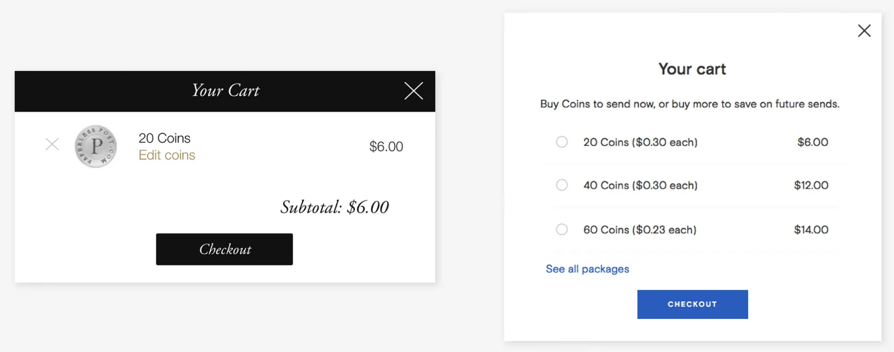
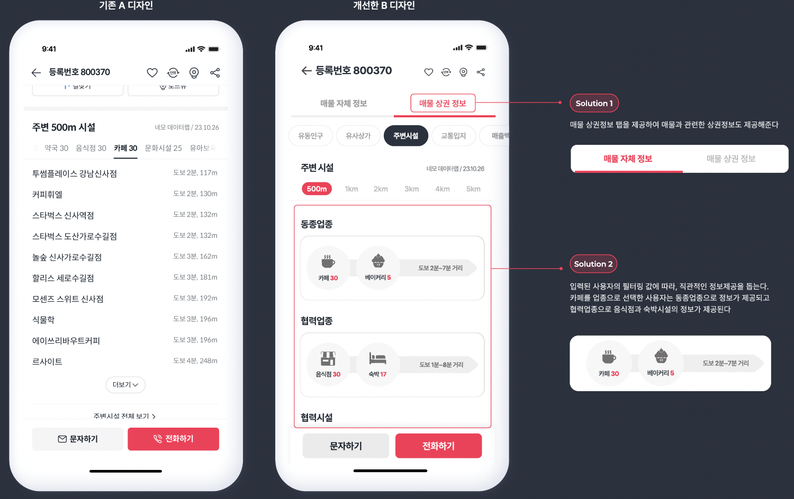

ch4. Design Concept & MVP(Minimum Viable Product) Design
디자인 콘셉트와 가설(hypothesis)
실습과제 6에서 KPI를 설정했다면 KPI를 개선할 수 있는 디자인 해결안의 콘셉트를 개발해보겠습니다. UX 디자인 콘셉트는 디자인을 통하여 사용자 경험의 변화가 어떻게 이루어진다는 개념적 서술이며, 디자인 해결안과 달리 디자인 구성 요소를 구체적으로 지정하거나 방법을 제시하지는 않습니다. 디자인 콘셉트를 디자인 해결안으로 구현하는 방법에는 여러 선택지와 가능성이 있기 때문입니다. 앞선 과제의 예시에서 뉴스 읽기 경험의 몰입도라는 KPI를 높이기 위한 디자인 콘셉트로 읽기 경험을 방해하는 앱 알림을 자동으로 끄게할 수도 있고, 몰입도가 증가하도록 폰트와 배경색 변경을 할 수 도 있고, 읽기의 속도에 따라 콘텐츠의 스크롤 인터렉션을 제공하는 콘셉트도 있을 것입니다.
데이터 기반 디자인 방법에서 디자인 콘셉트는 개선 디자인의 효과를 검증을 하는 가설로도 사용됩니다. 가설(Hypothesis)은 어떤 현상이나 문제에 대한 예측이나 추정을 의미합니다. 과학적 실험이나 연구에서 가설은 검증 가능한 진술로, 실험을 통해 옳고 그름을 판단할 수 있습니다. 가설을 세우는 과정은 문제를 명확히 하고, 그에 대한 예측을 구체적으로 기술하는 것입니다. 예를 들어 “빨간색 버튼이 파란색 버튼보다 클릭 수가 더 많을 것이다.” 같이 가설을 세울 수 있습니다. 향후 A/B 테스트에서는 설정한 가설이 맞는지를 검증하고, 개선안의 효과를 측정하게 됩니다.
아래의 예시는 Paperless Post라는 e-card 서비스 업체의 데이터 기반 디자인 사례입니다. 이 기업은 상품 수익을 높인다는 KPI를 설정하고, 사용자들이 서비스에서 상품을 구매할 때 사용하는 ‘Coin’(e-coin)을 사용자가 더 많이 구매하도록 한다는 UX 디자인 콘셉트를 정하였습니다. 그리고 디자인 해결안으로 [그림 25]의 오른쪽 이미지와 같은 Coin 구매 메뉴를 제안하였습니다. 왼쪽의 기존 Coin 구매 화면과 비교할 때, 많은 수의 Coin을 한꺼번에 구매하면 가격이 더 저렴하다는 것을 메뉴 옵션으로 쉽게 확인하고 더 많은 구매를 유도할 수 있는 디자인입니다.
다음 내용은 예시의 가설(hypothesis)입니다.
“카드 보낼 준비가 된 사용자들은 더 많은 코인을 한꺼번에 구매하는 것이 더 가치 있다고 인식하기 때문에 더 큰 코인 패키지를 구매할 것이다. 이는 평균 주문 금액(Average Order Value)을 증가시키고, 전환율에는 큰 변화가 없으면서도 전체적인 수익을 높이는 결과를 가져올 것이다.“
개선 디자인에 대한 A/B 테스트 결과는 어땠을까요? 개선 디자인에서 수익이 증가했을 뿐 아니라 구매로 이어지는 전환율도 높아지는 좋은 성과를 냈습니다. 가설이 채택된 것입니다. 구매 전환율도 높아진 이유는 개선 디자인을 접한 사용자들이 구매 내용과 본인의 이익에 확신이 생겨서 구매를 더 쉽게 결정했기 때문으로 보입니다.(27)(28)

Becoming a data-aware designer
Paperless Post®: Online Invitations, Greeting Cards, and Flyers
실습과제 7: 프로젝트의 디자인 콘셉트 개발
이제 진행중인 실습 프로젝트에서 KPI를 개선할 수 있는 디자인 콘셉트를 개발해보겠습니다. 앞서의 과제에서 우리는 3~5가지의 KPI를 정했기 때문에 각 KPI 마다 디자인 콘셉트가 개발될 수도 있고, 하나의 디자인 콘셉트가 여러 KPI를 개선할 수도 있습니다. 큰 개념의 콘셉트 아래에서 여러 KPI가 자연스럽게 개선된다면 서비스의 사용자 경험이 일관성을 갖게 됩니다. 그러나 두루뭉실한 큰 콘셉트로는 개성있는 디자인 구현이 어려울 수도 있으므로 적정선을 잡아서 디자인 콘셉트를 개발합니다.
- 디자인 콘셉트(가설)는 단순하게 ’무엇을 디자인 하겠다’가 아니라 ’어떤 사용자 경험을 하도록 하여 어떤 KPI를 개선하겠다’가 나와야합니다. 단순히 GUI 구성 요소의 개선이 아니라 사용자 경험의 KPI가 달라질 수 있도록 개발합니다.
- 앞선 실습과제에서 분석한 프로젝트 주제 관련 데이터에서 발견한 변수 패턴(각 변수의 대표값, 추세값, 변수간 관계)을 바탕으로 목표 사용자 경험을 구현해주는(KPI를 개선해주는) 디자인 컨셉을 개발합니다.
- KPI의 개선과 관련 없는 부분은 디자인 콘셉트로 제시하지 않습니다. 프로젝트의 논리성과 설득력을 높이기 위하여 KPI의 개선에 집중합니다. 향후 디자인 검증도 KPI의 개선 여부로 측정하므로, 이와 관련 없는 디자인 콘셉트는 측정되지 않습니다.
이상의 항목들을 반영하여 디자인 콘셉트를 개발하고, 해당 KPI와 디자인 콘셉트를 연결하여 표현한 문서를 작성합니다. KPI와 디자인 콘셉트의 연결 내용을 보고 논리적으로 적절하다고 공감할 수 있도록 서술합니다.
디자인 콘셉트를 반영한 최소기능제품(MVP: Minimum Viable Product) 디자인
MVP(최소 기능 제품)은 제품 개발 초기 단계에서 최소한의 기능만을 갖춘 버전을 의미합니다. 주요 특징은 다음과 같습니다:
- 최소한의 기능: 핵심 기능만을 포함하여 기본적인 사용자 요구를 충족시킵니다.
- 빠른 출시: 제품을 신속하게 시장에 출시하여 사용자의 반응을 얻습니다.
- 사용자 피드백: 사용자로부터 피드백을 받아 제품을 개선합니다.
- 비용 효율성: 초기 개발 비용과 시간을 절약할 수 있습니다.
MVP를 통해 기업은 위험을 최소화하고, 실제 사용자 요구에 맞춰 제품을 지속적으로 발전시킬 수 있습니다. MVP는 실제 사용을 목적으로 하기 보다는 디자인이나 서비스 기능을 검토하는 목적으로 제작 되므로, 적은 투자로 빠르게 제작하여 테스트 목적을 충족해야 합니다. 그래서 모든 기능을 다 구현하지 않고 테스트에 필요한 부분만 구현하며, 안정성, 구동 속도, 데이터 관리와 같이 서비스의 백엔드(Back end)의 세부적인 개발 이슈들은 반영하지 않습니다. 간단하고 빠른 검증을 위하여 실제 개발을 하지 않고, 프로토타입으로 개발하거나, 화면 디자인만 개발하는 경우도 있습니다. 우리 실습 과제에서도 평가할 지표와 관련한 화면 디자인만 개발하여 사용할 예정입니다.
실습과제 8: 기존 A 디자인 화면과 대응되는 개선 디자인 B안의 화면 디자인 개발
이상의 기본 개념 설명에 더하여, 우리 실습과제에서는 A/B 테스트를 사용한 검증 기법을 실습하기에 적합한 MVP를 제작합니다. 데이터 기반 디자인 실습에 적합한 MVP의 조건은 다음과 같습니다.
- 우선 타겟 앱 서비스에서 KPI 개선 검증에 필요한 사용자 시나리오를 선정하고, 시나리오가 적용되는 개별 서비스나 페이지들을 선정합니다. 테스트할 부분이 기존의 A 디자인의 어떤 부분인지 명확하게 정의해야합니다. 그래야 기존 디자인과 1:1 대응 비교가 가능한 개선 디자인 페이지들을 정하여 디자인할 것이기 때문입니다. 그리고 사용자들이 선정된 화면을 보고 KPI와 관련한 설문 질문에 바로 응답할 수 있는지도 검토해야 합니다. 예를들어 메뉴를 보고 구매 결정을 하는 화면이라면 메뉴나 구매 관련 콘텐츠가 적절하게 제공되어 사용자가 구매 결정을 판단할 수 있는 상태여야 합니다.
- 선정한 A 디자인의 각 페이지에 대하여 디자인 콘셉트(가설)를 반영한 개선 디자인, B 디자인을 개발합니다. A 디자인의 화면과 B 디자인의 화면 콘텐츠는 내용이 같아야 합니다. A, B 디자인 대응 화면은 사용 상황은 동일하고, 디자인만 비교되도록 설계하여야 디자인 변화의 영향을 측정할 수 있습니다. 이렇게 화면 단위의 비교테스트를 진행할 예정이므로, 서비스의 사용 경로가 매우 다르거나 페이지별로 기능 구성 내용이 매우 다른 개선 디자인은 평가할 수 없습니다. 개선 내용이 여러가지이고 복잡하면, 어떤 내용 때문에 개선되었는지를 특정할 수 없어서 테스트의 검증 효과가 떨어집니다.
- 좋은 개선 디자인 개발을 위하여 충분한 디자인 시안 개발과 평가 과정을 거쳐서 개선안을 완성합니다. 팀원이 여러 명이라면 각자 따로 개선 디자인 시안을 준비해서 선택지를 넓혀두고, 팀 내 협의를 통하여 최종안을 도출하는 것이 좋습니다. 디자인 개발은 디자이너에게 가장 중요한 고유 역량이므로, 좋은 개선안이 나오도록 노력해야하고, 좋은 개선안이 나와야 테스트에서 가설의 채택 가능성도 높아집니다.
- 개선 디자인(B 디자인)의 화면들을 디자인 완료했으면, 기존 디자인(A 디자인)과 대응하여 이미지 비교가 가능하도록 문서로 정리합니다. 이제 우리는 A/B 테스트를 실시할 B 디자인(개선 디자인) 개발을 마친 것입니다. 수고 많으셨습니다.

여기까지 기존 디자인의(A 디자인) 리서치와 개선 디자인(B 디자인) 제안 단원을 마치고, 다음 단계에서는 통계적 가설 검증 개념을 적용한 데이터 기반 디자인 검증(A/B테스트)에 대하여 자세히 알아보고, 개선 디자인에 대한 디자인 검증 실습을 진행하도록 하겠습니다.
(문헌 27) Aaron Gitlin, “Becoming a data-aware designer”, https://uxdesign.cc/becoming-a-data-aware-designer-1d7614ebc3ed
(문헌 28) Paperless Post, “online invitations for all moments that matter”, https://www,paperlesspost.com